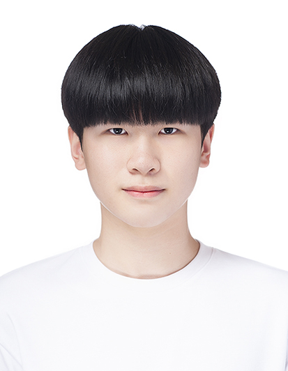

강경현 Kyunghyun Kang
Backend Engineer
아이디어를 사람들이 쓰는 서비스로 만들고,
쓰이는 동안 생기는 문제를 데이터로 찾아 고칩니다.

Projects
마냑 Backend / Infra 전담, 3인 팀2026.04 – 현재
키워드로 만든 이야기 속 주인공이 되어 AI와 채팅하는 스토리 서비스입니다. Spring Boot 서버, Next.js 관리자 웹과 AWS 인프라를 설계, 구축했습니다. 누적 가입 700+명, 게스트 포함 최대 MAU 3,941명 규모로 운영 중입니다.
- 서버 증설 없이 동시 채팅 수용량을 약 25명 → 390명으로 늘렸습니다. 부하 테스트에서 CPU와 DB는 여유로운데 응답이 밀리는 이유를 트레이스로 추적해, 채팅 턴이 스레드풀에서 기다리던 병목을 찾았습니다. 스레드풀이 대기열 100개가 다 차기 전에는 스레드를 4개만 쓰는 것이 원인이라, 기본 스레드 수를 최대값(64)과 같게 맞췄습니다.
- 서버, AI, 알림을 거치는 요청을 한 트레이스로 추적하게 했습니다. 스레드 전환과 비동기 메시지에도 트레이스 컨텍스트를 넘기고, 로그, 메트릭과 함께 OpenSearch Observability Stack에서 보게 했습니다. 트레이스로 채팅 지연의 대부분이 AI 스트리밍(약 9초)임을 확인했고, 턴마다 56개씩 찍히던 DB 스팬을 쿼리 스팬만 남겨 줄였습니다.
- 경보가 못 잡는 오류 없는 지연을 4분 안에 찾는 장애 진단 에이전트를 만들었습니다. 트레이스, 로그, 메트릭을 읽기 전용으로 조회해 원인과 코드 위치를 찾고, Slack 스레드로 보고해 바로 이어서 물어볼 수 있게 했습니다. 부하 테스트에서 찾은 병목 4건을 보관해 둔 기록으로 재현해 4건 모두 감지했습니다.
- SSE 연결이 끊겨 응답을 못 받은 사용자가 재전송하면서 생기던 중복 저장/과금을 없앴습니다. 생성 중 재요청은 락으로 막고, 생성 과정을 Redis Streams에 기록해 다시 연결하면 끊긴 응답을 처음부터 이어 받게 했습니다. 인터럽트(cancel(true))로는 생성이 멈추지 않아 끊긴 뒤에도 저장, 과금되던 문제는 취소와 저장 중 먼저 온 쪽만 처리되게(상태 CAS) 해 막았습니다.
- 실패하면 재시도 없이 사라지던 푸시 알림을 끝까지 전달하게 했습니다. 트랜잭션 아웃박스와 SQS로 재시도하고, 알림을 별도 서비스로 분리해 FCM이 느려져도 채팅에 영향이 없게 했습니다. 알림 서비스를 멈춘 동안에도 스토리 생성은 그대로 응답했고, 다시 켜자 밀린 알림을 이어서 처리했습니다.
- Redis 장애 조치 뒤 서버 재연결을 54초 → 33초로 줄였습니다. 강제 장애 조치 실험에서 재연결 시도 간격이 0.4, 9, 28, 54초로 벌어지는 것을 찾고, 재연결 간격, 연결 타임아웃, 명령 타임아웃을 줄여 5xx 없이 복구되게 했습니다.
- AWS 비용을 연 약 6,700달러 → 4,800달러로, 약 1,900달러 줄였습니다. 다중 AZ는 유지한 채 7일 CPU와 메모리 사용량을 근거로 과하게 잡힌 태스크 사양을 줄이고, 비용이 낮은 Fargate Spot과 Graviton으로 서버를 옮겼습니다.
Kotlin, Spring Boot, PostgreSQL, Redis, ECS Fargate, SQS, Terraform, OpenTelemetry
LinKHU 1인 개발 및 운영2026.02 – 현재
경희대 웹서비스 257개를 검색과 단축키로 바로 여는 브라우저 확장입니다. 평일 DAU 100+ 규모로, 주간 사용자 149명 중 대부분이 평일마다 사용합니다. 주간 사용자는 2월 말 65명에서 두 배 넘게 늘었습니다.
- 257개 교내 링크를 매일 자동 검사해 주소가 바뀐 곳을 GitHub 이슈로 받게 했습니다. 해외 망을 막는 교내 사이트가 있어 국내에 늘 켜 둔 서버에서 돌리고, 이틀 넘게 실패한 곳만 이슈 하나로 모아 일시 장애로는 알리지 않게 했습니다.
- 목록 파일 하나만 고치면 검증부터 Chrome, Firefox 스토어 배포까지 이어지게 했습니다. 검색 데이터, 다크 모드 아이콘, 지원 서비스 문서를 목록에서 생성하고, CI가 손으로 맞추다 생기던 불일치를 배포 전에 막아 혼자서도 운영할 수 있습니다. 테스트 125개가 매 배포를 검증하고, 외부 라이브러리 없이 운영합니다.
JavaScript, GitHub Actions